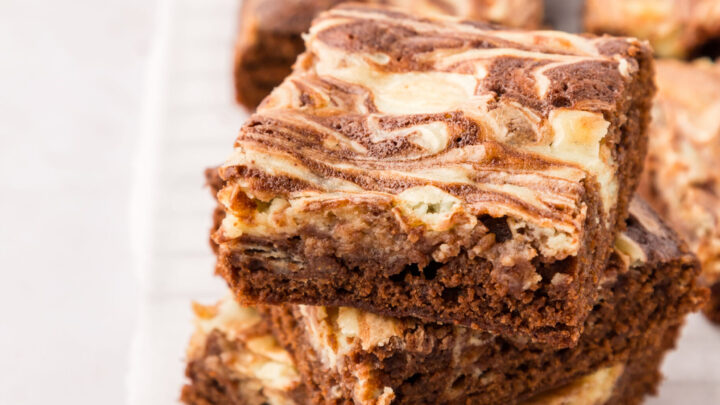

Cheesecake Brownies

Brownies and cheesecake layered together to make a heavenly treat
Start with a cakey brownie base, add on a thick layer of rich cheesecake, then swirl in a little more brownie making a mesmerizing top that begs to be eaten
Ingredients
- 1 package (4 oz.) cream cheese, softened
- 3 Tbsp. butter, softened
- 3 Tbsp. sugar
- 1 large egg
- 1 Tbsp. all-purpose flour
- 1 tsp. vanilla extract
- 1 package brownie mix Dunkin Hines
- Water, oil, and eggs called for on brownie mix package for cake-like brownies
Steps
- Preheat oven to 350F. Grease an 8x8-inch baking pan.
- Place cream cheese and butter in medium bowl and beat with electric mixer at medium speed for 2 minutes, or until smooth.
- Add sugar, egg, flour, and vanilla. Beat until smooth and set aside.
- Combine brownie mix with water, oil, and eggs called for to make cake-like brownies and fudge packet in large bowl.
- Spread brownie batter into greased baking pan.
- Spoon cheesecake mixture on top of brownie batter.
- Swirl the layers with a knife to create a marbled effect.
- Bake for 35 minutes or until toothpick inserted 1 inch from edge of pan comes out clean.
- Let cool on a wire rack.